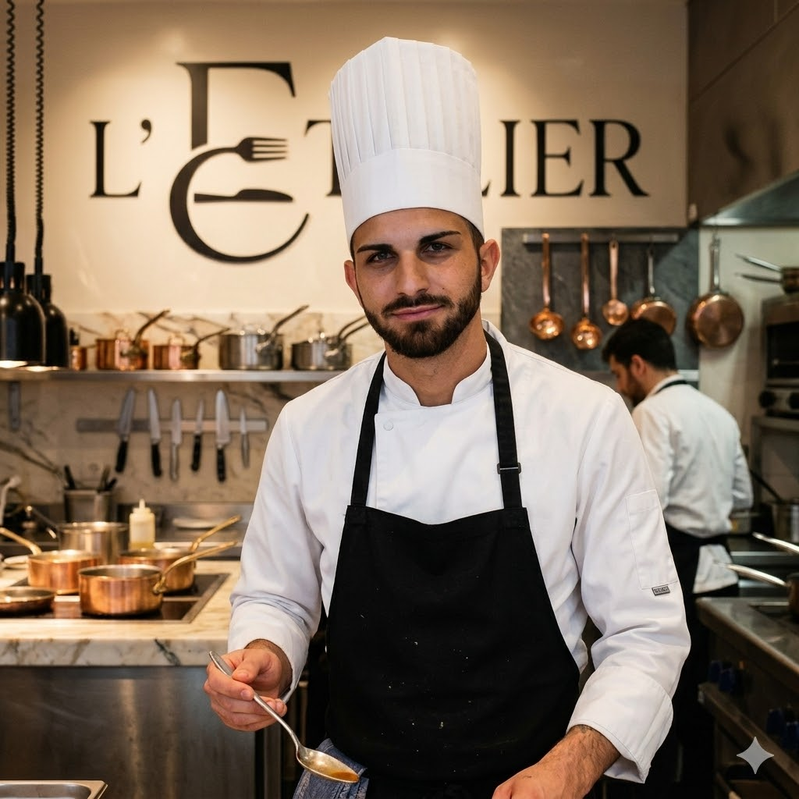

L'Atelier
Bienvenue dans notre atelier ! Offre un'esperienza culinaria sofisticata e multisensoriale, basata su materie prime eccellenti, stagionalità, tecniche di cottura innovative e un servizio curato nei minimi dettagli. Non solo cibo, ma un percorso studiato tra contrasti di temperature, consistenze e un impiattamento curato esteticamente.
<<<<<<< Updated upstream
"La cucina di Giuseppe non nasce tra quattro mura, ma lungo le strade del mondo. Ogni piatto è il diario di un viaggio, una sintesi perfetta tra le tecniche sofisticate apprese nelle grandi cucine e le suggestioni sensoriali raccolte in giro per il globo. Dalle spezie d'Oriente alle cotture ancestrali, Giuseppe trasforma i suoi ricordi in esperienze gourmet, dove l'ingrediente locale incontra un'anima internazionale. "A guidare l'ospite nel viaggio sensoriale creato dallo Chef Giuseppe c'è Ash,
Chef de Rang con una profonda cultura dell'accoglienza.
Grazie a una solida esperienza in sale di alto livello, Ash trasforma il servizio in un racconto:
ogni gesto è studiato, ogni spiegazione è un invito a scoprire i segreti dietro i piatti sofisticati della nostra cucina. Per lui,
l'eccellenza non è solo nel piatto, ma nella cura invisibile e perfetta di ogni dettaglio a tavola."
"A guidare l'ospite nel viaggio sensoriale creato dallo Chef Giuseppe c'è Ash,
Chef de Rang con una profonda cultura dell'accoglienza.
Grazie a una solida esperienza in sale di alto livello, Ash trasforma il servizio in un racconto:
ogni gesto è studiato, ogni spiegazione è un invito a scoprire i segreti dietro i piatti sofisticati della nostra cucina. Per lui,
l'eccellenza non è solo nel piatto, ma nella cura invisibile e perfetta di ogni dettaglio a tavola."
 =======
=======